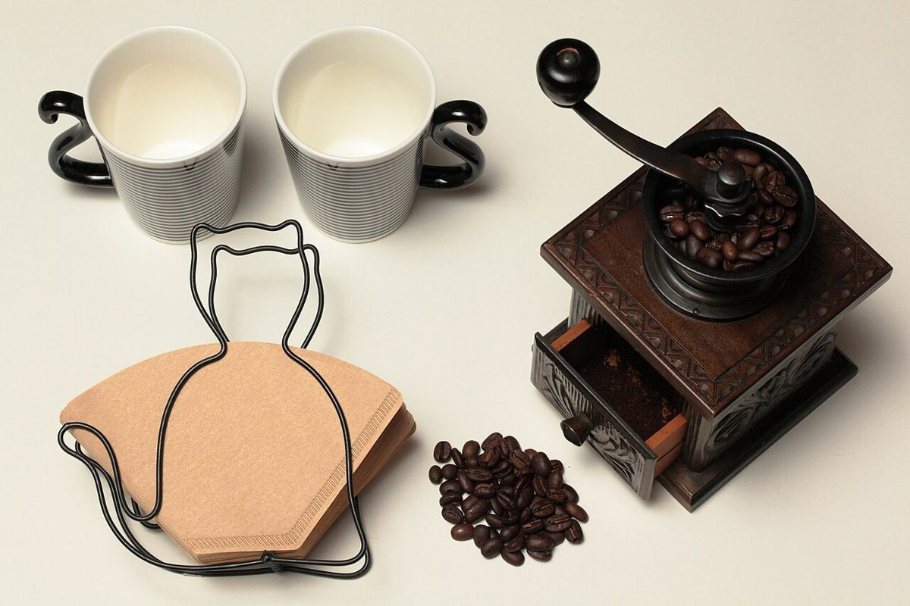
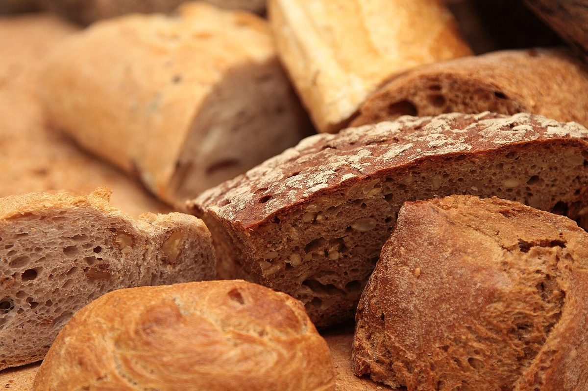

しくみ
配置図の読み方




制作側の連想
お店とは関係のない、ひとつの見立て
お店の理念や由来から選んだ題材ではありません。制作側が「卓上のパター練習器」を思いついて、六つの部位に分けて並べただけの、サイト全体の見せ方の工夫です。お店のメニューやサービスを説明するものではありません。
部位
六つの部位を順に
1
パターマット
机に置いたときに、ボールがまっすぐ進むかどうかを見せてくれる面です。図ではいちばん大きな面として描いています。
2
ターゲットカップ
ボールを落とす穴。位置が決まっているので、狙いの目安になります。
3
ボール返却レール
ボールが戻ってくる溝を、マットの手前に一本通した想定です。
4
ガイドライン
ボールからカップへ向けた一本の線。打つ向きを目で追えるようにします。
5
バックバンパー
マットの奥に立てた縁取り。ボールが机の外へ出るのを防ぐ役目です。
6
ベース脚
四隅の足。机の上でずれないように支えます。
お店のこと
確認できたことだけ
PATISSERIE Leafrich(カフェ)の所在地とInstagramのアカウントのみ確認しています。ほかの情報は準備中です。
| 所在地 | 〒923-1245 石川県能美市辰口町６７６−１ |
|---|---|
| 電話 | 準備中 |
| 営業時間 | 準備中 |
| 定休日 | 準備中 |
| ご予約 | 準備中 |
| 駐車場 | 準備中 |
| SNS | Instagram @patisserie_leafrich |